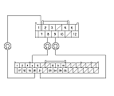
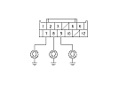
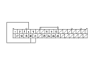

Climate Control-Navigation Communication Line Circuit Troubleshooting
Operate the climate control system in several modes.
Is the climate control system OK?
YES
-
Go to
Step 2
.
NO
-
Do the self-diagnostic function with the HDS
or
the climate control unit.
■
Do the system links.
Is the A/C or TALK/BACK icon red?
YES
-
If A/C icon is red, go to
Step 3
.
If TALK/BACK icon is red,
go to ‘‘voice control does not work/respond'' in the navigation system symptom troubleshooting.
■
NO
-
Go to
Step 9
.
Turn the ignition switch to LOCK (0).
Disconnect navigation unit connector B (32P).
Disconnect climate control unit connector B (12P).
Check for continuity between the following terminals of climate control unit connector B (12P) and navigation unit connector B (32P).
12P:
32P:
No. 7
No. 20
No. 9
No. 21
No. 8
No. 4
Is there continuity?
YES
-
Go to
Step 7
.
NO
-
Repair open in the wire(s) between the climate control unit and the navigation unit.■

Check for continuity between body ground and climate control unit connector B (12P) No. 7, 8, and No. 9 terminals individually.
Is there continuity?
YES
-
Repair short to body ground in the wire(s) between the climate control unit and the navigation unit.■
NO
-
Go to
Step 8
.
Reconnect climate control unit connector B (12P).

Connect the navigation unit connector B (32P) No. 4, 20, and No. 21 terminals with jumper wires.
Turn the ignition switch to ON (II).

Press and hold the AUTO button, then press and hold the OFF button.
Is the HEAT/VENT indicator solid with the remaining icons blinking?
YES
-
Do the Unit check with the navigation system.
■
NO
-
Substitute a known-good climate control unit, and recheck. If the symptom goes away, replace the original climate control unit .■